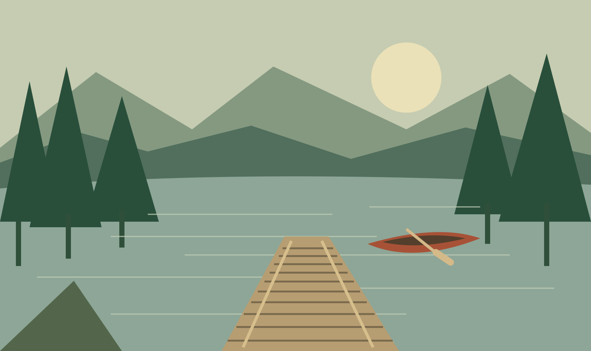

Wake.
A bell, not a shout. Nobody is made to run before breakfast.

Two weeks, no phones, forty children and eleven staff on a lake in northern Vermont. We have been running the same four sessions since 1974 and the biggest change in fifty years is that we now ring you on day three whether or not anything has happened, because we learned that silence is worse than news.
A fictional camp concept. Operational and staffing descriptions are supplied brand copy, not verified safety assurances.
Every camper learns it in the first week, because it is the one knot that will not slip and will still untie when it has been soaked.
Decorative concept copy, not rope safety instruction. Knot security depends on material, tying and use; learn with a qualified instructor.
A bell, not a shout. Nobody is made to run before breakfast.
Everybody eats together. There is always something plain for the child who eats nothing.
Canoeing, climbing, woodwork or art. Chosen on Monday, kept for the week.
Lifeguarded, two in the water, one on the dock, every time.
Songs, badly. This is not optional and everybody secretly likes it.
Eight to eleven year olds at nine, twelve and up at half past ten.
Supplied schedule contains differing bedtimes. Confirm your camper's actual bedtime with the operator.
The parent questions that matter.
Concept staffing policy, not independently verified.
One counsellor sleeps in every cabin. Not nearby, in it.
A qualified nurse lives on site for the whole session and holds every medication.
Staff to camper ratio is one to four, and one to three on the water.
If a child cannot settle, we ring you. We would rather wake you at midnight than have you hear about it on day fourteen.
Verify the operator's accreditation, staff screening, supervision, emergency procedures, medication policy, swimming controls and current contact arrangements directly. This page is not an operating camp.
Illustrative season dates, fees and capacity from the brief. Availability is not live.
22 June to 5 July
8 to 11
2,450 USD
6 July to 19 July
10 to 13
2,450 USD
20 July to 2 August
12 to 15
2,600 USD
3 August to 16 August
8 to 15, mixed
2,600 USD
Showing all four sample sessions.
Fee covers everything including the bus from Burlington. Fifteen places each session are funded, ask and we will tell you plainly whether you qualify.
Funding description is illustrative. Eligibility and funded places must be confirmed directly.
0 of 6 packed.
Browser checklist only. Cleared on reload.
“He came back filthy, sunburnt and able to tie three knots. He also rang us on the camp phone in week two to say he was fine and could he stay another session.”
Sunburn is not a goal or evidence of care. Confirm the operator's sun protection procedures.
We will tell you how many are left in each session rather than making you ask.
This demo cannot hold a place. Choose a session to prepare an email.
Open email draft ↗No enrolment, deposit or message is submitted here. Email opens your mail app. Confirm all dates, availability and policies with the real operator.